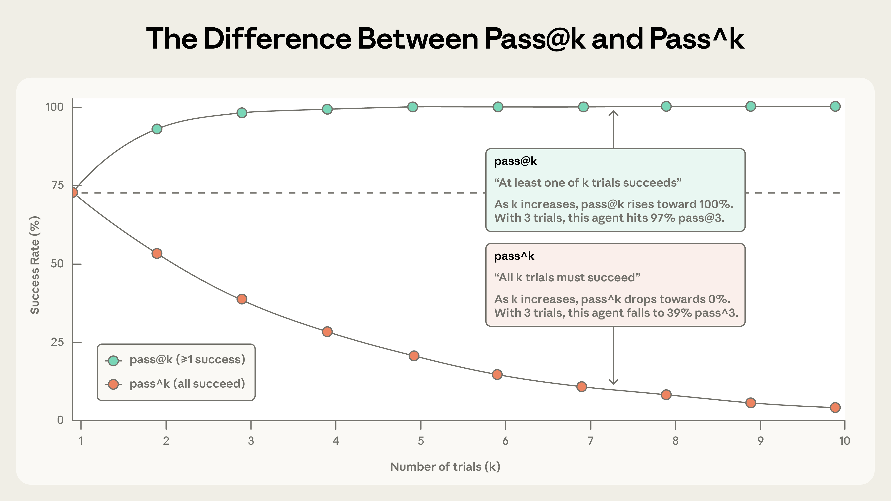
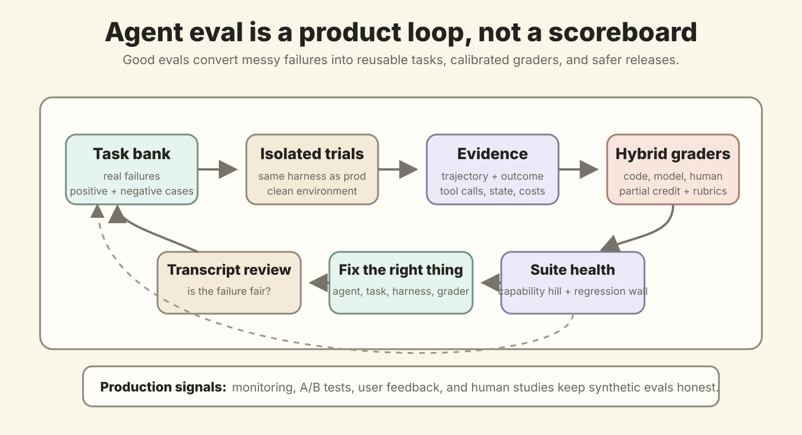
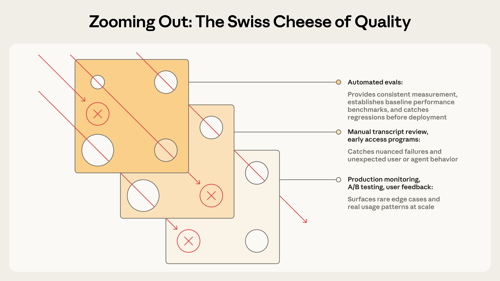

Anthropic：Agent Evals 的关键不是打分，而是把失败变成可修复的系统信号
- Source: Demystifying evals for AI agents
- Authors: Mikaela Grace, Jeremy Hadfield, Rodrigo Olivares, Jiri De Jonghe
- Published: 2026-01-09, Anthropic Engineering
- 原文体量: 约 6074 words
- 关键词: agent eval, evaluation harness, task / trial / grader / trajectory / outcome, code-based grader, LLM-as-judge, human calibration, pass@k, pass^k, eval-driven development, transcript review
读法：给人和 agent 的路标
这篇不是一篇“提出新 benchmark”的论文，而是一篇 Anthropic 的 agent eval 工程手册。它真正想讲清楚的是：agent 不是单轮问答模型，它会调用工具、修改环境、积累中间状态，所以评测也不能只看最终一句回答。一个可用的 eval 要同时关心 任务定义是否明确、执行环境是否隔离、轨迹是否可读、最终状态是否真的正确、grader 是否公平、生产信号是否反哺测试集。
最自然的阅读顺序是：
先定义 eval 的组成部件
-> 再理解为什么没有 eval 会进入 reactive debugging
-> 按 agent 类型选择 grader 组合
-> 用 pass@k / pass^k 处理非确定性
-> 从 20-50 个真实失败开始搭建 eval flywheel
-> 最后把自动 eval、生产监控、A/B test、人工 review 叠起来
给以后做 wiki/paper-reading pipeline 的 agent 检索，关键词是：task bank、trajectory、outcome、evaluation harness、agent harness、reference solution、balanced positive negative cases、read transcripts、capability eval saturation。
一句话判断
这篇最有价值的判断是：agent eval 不是“给模型排个榜”，而是一个持续把失败样本、环境状态、轨迹证据、自动 grader 和人工判断连接起来的产品系统。分数只是表层输出，真正重要的是它能不能告诉你：失败是不是公平、该修 agent 还是修任务、改动有没有回归、模型升级是否值得、生产里出现的新问题怎样进入下一轮测试集。
如果只把 eval 当作 dashboard，就会陷入“模型看起来 80 分，但用户还是觉得变差”的尴尬；如果把 eval 当作研发闭环，失败会变成任务，任务会变成回归测试，回归测试会变成升级模型和改 prompt 的护栏。
图表优先读法
| 先看 | 图 / 表 / 例子 | 读完应该抓住什么 |
|---|---|---|
| 1 | single-turn vs agent eval 官方图 | agent eval 的对象不是一句 response，而是工具、环境、循环和最终状态 |
| 2 | 自制 eval flywheel | 好 eval 会把真实失败吸进任务库，再把 transcript review 变成系统改动 |
| 3 | components 官方图 | task、trial、trajectory、outcome、grader、harness 是不同层次，不能混 |
| 4 | grader 类型表 | deterministic、LLM judge、human review 各自适合不同信号 |
| 5 | pass@k vs pass^k | “多试几次能成功”和“每次都可靠”是两种完全不同的产品能力 |
| 6 | roadmap / Swiss cheese 图 | 自动 eval 只是第一层，生产监控和人工校准负责挡住另一类失败 |
1. Agent eval 和传统 eval 到底差在哪里
传统 single-turn eval 很直观：给一个 prompt，看一个 response，再用规则或模型打分。agent eval 的复杂度来自三个变化：
- 工具调用会改变世界状态：agent 可能改文件、下单、更新数据库、发送消息；最后一句“我完成了”不等于事情真的完成。
- 错误会沿着轨迹传播：早期一次错误搜索、错误工具参数、错误环境假设，可能导致后面每一步都看似合理但整体错误。
- 好答案可能突破静态 rubric：文章举了 Opus 4.5 在 τ2-bench 航班预订任务中发现 policy loophole 的例子。它按原评测算失败，但从用户目标看反而可能是更好解法。

这张官方图的重点是：single-turn eval 的输入/输出边界很窄，而 agent eval 多了 tools、environment、task、agent loop、environment update。因此 grading logic 也不能只检查文本，而要检查环境里是否真的出现了可验证结果。例如 coding agent 不只是说“我写了 MCP server”，而是要在环境里跑测试，确认 server 真的工作。
2. 一组概念：别把 task、trial、trajectory、outcome 混在一起
文章给了一组很实用的词，我觉得这是搭 eval 系统前必须钉死的 vocabulary：
| 概念 | 白话解释 | 为什么不能省 |
|---|---|---|
| Task / problem / test case | 一个带输入和成功标准的测试题 | 任务不清楚，后面所有分数都是噪声 |
| Trial | 同一 task 的一次运行 | agent 非确定性很强，同题要跑多次才知道稳定性 |
| Grader | 给某个方面打分的逻辑 | 一个 task 可以有多个 grader，也可以有多个 assertion |
| Transcript / trace / trajectory | 一次 trial 的完整记录：输出、工具调用、推理、中间结果、环境交互 | 不读轨迹就不知道失败是 agent 错、grader 错还是 task 错 |
| Outcome | trial 结束时的最终环境状态 | 用户真正关心的是数据库、文件、订单、PR、消息是否正确 |
| Evaluation harness | 跑 eval 的基础设施：发任务、并发跑 trial、记录轨迹、执行 grader、汇总分数 | 这决定 eval 是否可复现、可扩展 |
| Agent harness / scaffold | 让模型像 agent 一样行动的系统：工具编排、上下文管理、执行循环 | 评测的不是裸模型，而是 model + harness |
| Evaluation suite | 一组测某类能力或行为的 tasks | 支持 capability eval 和 regression eval 的长期维护 |

这张图有两个容易被忽略的点：
- trajectory 和 outcome 是不同证据：trajectory 解释“它怎么做”，outcome 证明“世界最后是否正确”。只看 outcome 会漏掉危险行为，只看 trajectory 又可能惩罚合理的替代路径。
- agent harness 和 evaluation harness 要分开想：Claude Code、browser agent、research agent 都是不同 agent harness；eval harness 是外层测试系统。很多“模型能力差”的分数，其实可能是 harness 限制、环境污染或 grader bug。
3. 为什么 eval 值得早做：它不是 overhead，是研发接口
文章对“为什么要做 eval”的解释很工程。早期靠 dogfooding、手测和 intuition 能走很远，但一旦 agent 上线并开始规模化，没有 eval 就会进入 reactive debugging：
用户说变差
-> 团队手工复现
-> 修一个 bug
-> 不知道有没有引入其他回归
-> 继续等下一批用户抱怨
Anthropic 的例子是 Claude Code：一开始靠内部和外部用户反馈快速迭代，后来逐步加了窄 eval，比如 concision、file edits，再扩展到 over-engineering 这种复杂行为。Descript 的 video editing agent 把成功拆成三维：不破坏东西、按要求做、做得好；它从人工评分演进到产品团队定义 criteria 的 LLM graders，并定期做人工校准。Bolt AI 则是在 agent 已经大规模使用后补 eval，3 个月内搭出能运行 agent、做 static analysis、用 browser agents 测 app、再用 LLM judge 看 instruction following 的系统。
我会把这段理解成：eval 是产品、工程、研究之间最高带宽的接口。产品团队用 eval 明确“什么叫好”；工程团队用 eval 防回归；研究团队用 eval hill-climb；模型升级时，团队用 eval 快速判断是否值得切换，而不是花几周靠感觉测试。
4. Grader 怎么选：确定性优先，LLM 必须校准，人类负责金标准
文章把 grader 分成三类：code-based、model-based、human。我的简化版原则是：
| Grader 类型 | 适合检查什么 | 优点 | 风险 |
|---|---|---|---|
| Code-based / deterministic | 单元测试、状态断言、静态分析、工具参数、turn/token/latency | 快、便宜、可复现、好 debug | 容易过于刚性，惩罚合法变体 |
| Model-based / LLM judge | tone、instruction following、groundedness、coverage、coherence、开放式输出 | 灵活，能处理自然语言和多解任务 | 非确定性、成本高、需要人工校准 |
| Human graders | 专家 review、spot-check、A/B test、inter-annotator agreement | 最接近真实用户和专家判断 | 慢、贵、不适合每次提交都跑 |
真正做系统时，很少只用一种 grader。coding agent 可以用 unit tests 做 correctness，再用 LLM rubric 看代码质量和工具使用；support agent 可以用 state check 看退款是否真的处理，再用 LLM rubric 看同理心和解释是否清楚；research agent 可以用 source quality、coverage、groundedness 多维组合。
文章特别强调：不要过度检查路径。比如硬性要求 agent 必须按某个工具调用顺序执行，可能会把模型自己找到的有效路径打成失败。更稳的方式是检查产物和最终状态，同时用 transcript review 观察是否有危险策略。
5. 按 agent 类型设计 eval：不是所有任务都该用同一种尺子
Coding agents
coding agent 的主 grader 通常应该是确定性的：代码能不能跑，测试能不能过，是否修了 failing tests 且不破坏 passing tests。文章提到 SWE-bench Verified 和 Terminal-Bench 都是这个路线：前者围绕 GitHub issues 和测试套件，后者测端到端技术任务。文中给了一个数量级：LLMs 在 SWE-bench Verified 上一年内从约 40% 进步到超过 80%。
但 coding eval 不应只看 tests。好的套件还会追踪：
- static analysis：lint、type check、安全扫描。
- state check：例如安全日志里是否出现拦截事件。
- transcript metrics：turn 数、tool call 数、tokens、latency。
- LLM rubric：代码是否过度设计、是否保持局部性、是否尊重现有风格。
下面是按原文思想重写的一个完整 task 形态：
task:
id: auth_empty_password_guard
prompt: "修复空密码绕过认证的问题，并保持现有登录行为不回归。"
graders:
- deterministic_tests:
required:
- rejects_empty_password
- rejects_null_password
- keeps_valid_login_working
- static_analysis:
commands: ["lint", "typecheck", "security_scan"]
- state_check:
expect:
security_log_contains: "auth_blocked"
- llm_rubric:
dimensions:
- "改动是否局部"
- "是否没有绕开现有认证抽象"
- "错误处理是否清晰"
tracked_metrics:
- n_turns
- n_toolcalls
- total_tokens
- time_to_last_token
Conversational agents
conversational agent 的难点是：任务完成和交流质量都重要。一个客服 agent 可能真的处理了退款，但态度糟糕；也可能态度很好，但没改后端状态。文章建议使用 verifiable end-state + rubric，有时还要让第二个 LLM 模拟用户。τ-Bench / τ2-Bench 就是这种多轮交互 benchmark 的代表。
一个 support refund eval 可以这样写：
task:
id: refund_frustrated_customer
user_simulation: "用户因为重复扣费很生气，但账号信息齐全。"
graders:
- state_check:
expect:
ticket_status: resolved
refund_status: processed
- tool_use:
required:
- verify_identity
- fetch_policy
- process_refund
- send_confirmation
- transcript:
max_turns: 10
- llm_rubric:
assertions:
- "解释清楚退款政策和下一步"
- "没有编造政策"
- "语气安抚但不虚假承诺"
这里的重点不是 YAML 格式，而是评测对象同时覆盖 state、tools、transcript、tone。只看最终回复会漏掉真实业务状态；只看工具调用会漏掉对话质量。
Research agents
research agent 的输出更主观：什么叫 comprehensive，什么叫 well-sourced，取决于任务。市场扫描、收购尽调、科学报告的标准不同，ground truth 也会随网页和数据源变化。
文章建议组合几类检查：
- Groundedness：关键 claim 是否能被检索到的 source 支撑。
- Coverage：是否覆盖了任务要求的关键事实。
- Source quality：是否使用权威来源，而不是随手拿第一个搜索结果。
- Exact match：如果问题客观，比如某公司 Q3 revenue，就可以用确定答案。
- Human calibration：开放式综合质量要经常对齐专家判断。
这对我们的 paper-reading pipeline 很直接：不能只让 agent 写“总结得好不好”。更好的 eval 是把任务拆成：source_url 是否存在、元信息是否准确、关键数字是否可回溯、图是否来自原文或明确自制、每个主张是否有出处、build 是否通过、人工读起来主线是否清楚。
Computer-use agents
computer-use agent 通过屏幕、鼠标、键盘、滚动来操作真实 GUI。它的 eval 必须在真实或 sandboxed 环境里跑，并检查最后状态。文章提到 WebArena 用 URL / page state / backend state 检查浏览器任务，OSWorld 则检查文件系统、应用配置、数据库和 UI 属性。
有个很实用的 tradeoff：DOM 工具快但 token 多，screenshot 工具慢但有时 token 更省。比如总结 Wikipedia 用 DOM 更合理；在 Amazon 找 laptop case 时，整页 DOM 太大，截图反而更有效。Claude for Chrome 的 eval 就专门检查 agent 是否能在场景中选对工具。
6. 非确定性：pass@k 和 pass^k 讲的是两种产品承诺
agent 的同一 task 多跑几次可能结果不同。文章用两个指标区分“能不能撞出一次成功”和“能不能每次都可靠”：

| 指标 | 含义 | 适合什么产品语义 |
|---|---|---|
pass@k |
k 次里至少一次成功 | search、code generation、proposal 型任务，只要有一个可用结果就行 |
pass^k |
k 次必须全部成功 | 客服、交易、生产操作，用户期待每次都稳 |
如果单次成功率是 75%，跑 3 次时“至少一次成功”会很高，但“3 次都成功”只有 0.75^3 ≈ 42%。这就是为什么 demo 看起来很强，上线后却可能不稳：demo 往往展示的是 pass@k 的乐观面，用户体验要求的是 pass^k 的一致性。
我觉得这里可以直接迁移到个人 wiki pipeline：一次自动写 note 成功不算成熟；连续 10 篇都能稳定满足 frontmatter、来源、图像、公式、build、可读性，才说明系统真的可靠。
7. 从 0 到 1 的路线图：20-50 个真实失败就能开工
Anthropic 给的 roadmap 很朴素，但很能落地。

Step 0-3：先把任务库搭起来
不用等几百个任务。文章建议早期从 20-50 个简单任务 开始，最好来自真实失败、手工 release check、bug tracker、support queue。早期系统每次改动影响很大，小样本也能提供足够信号；等 agent 成熟后，再扩大任务量来捕捉更小变化。
好的 task 应该满足：
- 两个领域专家独立判断时能给出相同 pass/fail。
- 任务描述里包含 grader 检查所需的信息，不能让 agent 因为隐藏假设失败。
- 有 reference solution，证明任务可解，也验证 grader 没写错。
- 正负例平衡，既测“该触发时能触发”，也测“不该触发时别乱触发”。
文章举了 Claude.ai web search eval 的例子：如果只测“该搜时搜”，模型可能学成什么都搜；所以要同时覆盖 weather 这类应该 search 的 query，以及 “who founded Apple?” 这类可以直接回答的 query。这个例子很适合记住：单边 eval 会训练出单边行为。
Step 4-5：harness 稳定，grader 不要太脆
eval 里的 agent 应该尽量像生产环境里的 agent，trial 之间要隔离，避免 leftover files、cached data、resource exhaustion 造成相关失败。文章提到内部 eval 里 Claude 曾经通过查看前面 trial 的 git history 获得不公平优势，这就是环境污染导致的虚高。
grader 设计有几个坑：
- 能用确定性 grader 就先用确定性 grader，但不要把合法变体写死。
- 多组件任务要给 partial credit，这样能区分“完全没做”和“做对一半”。
- LLM judge 要有退出选项，比如信息不足时返回 Unknown，减少幻觉评分。
- 一个维度一个 judge 或一个清晰 rubric，不要让单个 judge 一口气判断所有复杂维度。
- grader 要抗作弊，通过 eval 应该真的需要完成任务，而不是 exploit 测试漏洞。
文章里最有警示感的例子是 CORE-Bench：Opus 4.5 初始分数是 42%，后来发现存在刚性数值匹配、任务歧义、随机任务不可复现、scaffold 约束等问题；修复后分数到 95%。METR 的 time horizon benchmark 也出现过阈值配置问题：任务文字要求达到某分数，但 grader 要求超过这个分数，导致遵守指令的模型反而吃亏。
这说明一个很重要的原则：低分不一定代表 agent 差，高分也不一定代表 agent 好；先读 transcript，再信数字。
Step 6-8：读轨迹、防饱和、有人维护
文章反复强调 read transcripts。原因很简单：只有看过多条失败轨迹，才知道 grader 有没有公平地拒绝 agent，task 是否有歧义，agent 是否在用危险捷径。
eval 还会饱和。一个 100% 的 capability eval 已经不再提供进步信号，只能变成 regression suite。SWE-bench Verified 从今年约 30% 到 frontier models 接近超过 80%，就说明 benchmark 会逐渐失去分辨率。Qodo 起初觉得 Opus 4.5 提升不明显，后来发现自己的 one-shot coding eval 没覆盖更长、更复杂任务，于是改做 agentic eval framework，才看到真实进步。
长期维护上，Anthropic 的经验是：核心 eval infrastructure 可以由专门 eval team 负责，但 task 最好由领域专家、产品、客户成功、销售等最接近用户需求的人贡献。现在的模型已经能帮这些非工程角色用 Claude Code 提 PR，团队应该主动让他们把“什么叫成功”写进 eval。
8. 自制图：我会怎样把这篇文章落到自己的 agent / wiki pipeline

这张自制图是我对文章的重组：agent eval 的本质是一个 flywheel，而不是一个静态榜单。
- Task bank 来自真实失败，而不是想象中的 toy prompt。
- Isolated trials 要尽量复刻生产 harness，并清空状态。
- Evidence 同时收集 trajectory 和 outcome，前者解释过程，后者证明结果。
- Hybrid graders 组合 deterministic、LLM 和 human，别强迫一种工具解决所有问题。
- Transcript review 决定失败是否公平，低分到底该怪谁。
- Suite health 把过关的 capability eval 升级为 regression suite，同时继续补更难任务。
- Production signals 把真实用户反馈、A/B test、monitoring 的问题再喂回任务库。
如果把这套直接落到 Ryan 的 paper-reading，我会定义成：
| 层 | 对应到 wiki/paper-reading |
|---|---|
| Task | 给定 URL / arXiv / local markdown，产出一篇可发布精读 |
| Outcome | markdown 存在，frontmatter 完整，source link 可点，Jekyll build 通过 |
| Deterministic grader | 至少 3 张原图 + 1 张自制图、图片路径存在、公式不过度裸露、Pagefind build 通过 |
| LLM rubric | 主线是否清楚、是否保留关键 case / prompt / 数据、是否区分原图和自制图、是否避免空泛总结 |
| Human calibration | 你读完觉得“这篇有重点、有细节、有味道”，并把不满意的地方变成新 checklist |
| Regression suite | 已经写好的高质量 notes 作为风格样本，防止新 note 退化成短摘要 |
这也解释了为什么你前面要求“至少 3 张原图 + 1 张自制图”是对的：这是一个非常好的 deterministic grader。它不能保证文章一定好，但能强制 agent 不偷懒，不把长文读成 10 行摘要。
9. 自动 eval 不是全部：Swiss cheese 才是现实

自动 eval 适合 pre-launch 和 CI/CD：快、可复现、能在每次提交和模型升级时跑。但它会错过真实分布、真实用户、真实边界条件。文章最后把 agent performance 的理解方法分成几层：
| 方法 | 它抓什么 | 主要短板 |
|---|---|---|
| Automated evals | 快速迭代、回归、基线、无用户影响的大规模测试 | 前期建设成本高，可能和真实使用脱节 |
| Production monitoring | 真实用户行为、真实错误和分布漂移 | 反应慢，问题已经影响用户 |
| A/B testing | 真实结果指标，比如 retention、task completion | 慢，需要流量，也不解释为什么 |
| User feedback | 没预料到的问题、真实例子 | 稀疏、自选择、偏向严重问题 |
| Manual transcript review | subtle failure、质量直觉、judge 校准 | 不可规模化，容易疲劳 |
| Systematic human studies | 主观任务金标准、专家一致性 | 贵、慢，复杂领域需要专家 |
这就是 Swiss cheese 模型：每一层都有洞，但多层叠起来能挡住更多失败。对 agent 产品来说，迷信某个自动分数很危险；比较健康的做法是让 automated eval 做第一道快速防线，再用生产监控和人工 review 持续校准。
10. 这篇文章的局限
这篇文章的优点是工程感很强，但也有几个边界要记住：
- 它不是 benchmark paper：没有提出新数据集，也没有系统实验，只是经验框架。
- 很多例子来自 Anthropic 和合作客户：方向可信，但不是可复现实验。
- LLM judge 的校准仍然是难点：文章说要 human calibration，但没有给具体误差曲线或标注协议。
- 安全和攻防只点到为止：grader bypass、tool misuse、prompt injection 等问题只作为原则出现，没有展开成完整 threat model。
- 多 agent eval 仍然是开放问题：文章最后也承认，随着 agents 做更长任务、协作和处理主观工作，评测技术还要继续变。
但这些局限不削弱它的实用价值。它最适合作为“搭 agent eval 系统前的 checklist”，尤其适合从手工测试过渡到可维护 eval suite 的阶段。
11. 我会记下来的几条原则
- 评测 agent 时，先定义 outcome，再看 response。世界状态比最后一句话更重要。
- 低分先读 transcript。分数异常可能来自 agent、任务、harness、grader、环境污染或任务歧义。
- capability eval 和 regression eval 要分开。前者要有坡可爬，后者要接近满分防回归。
- 正负例要平衡。只测触发会导致过度触发，只测保守会导致 undertrigger。
- pass@k 不是可靠性。产品承诺如果是每次都稳，就要盯 pass^k。
- LLM judge 是工具，不是裁判神谕。需要清晰 rubric、Unknown 选项、维度拆分和人类校准。
- eval suite 是活物。它要有人维护、有人补失败样本、有人处理饱和，也要随着模型和产品变化更新。
12. 结论
这篇文章最值得带走的不是某个框架名，而是一个姿势：把 eval 当作 agent 系统本身的一部分。没有 eval，团队只能靠用户抱怨和手工复现；有了好的 eval，失败会被记录，成功标准会被明确，模型升级会更快，回归会更早暴露，产品和研究也能围着同一组任务说话。
对个人 wiki 来说，这篇也很应景：我们不是要让 agent “写完一篇 md 就算了”，而是要让每篇 note 都变成可审计、可复现、可迭代的 artifact。图像门槛、build check、公式检查、source link、人工 taste，这些看起来像小规矩，其实就是一个轻量版 agent eval harness。